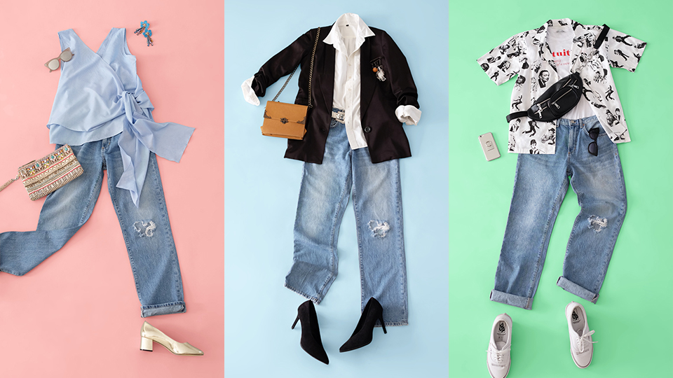
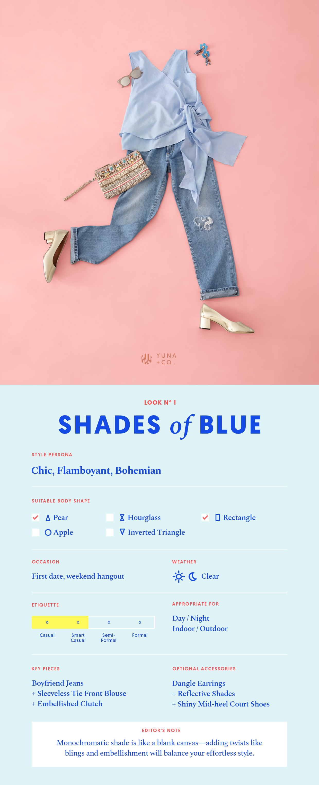
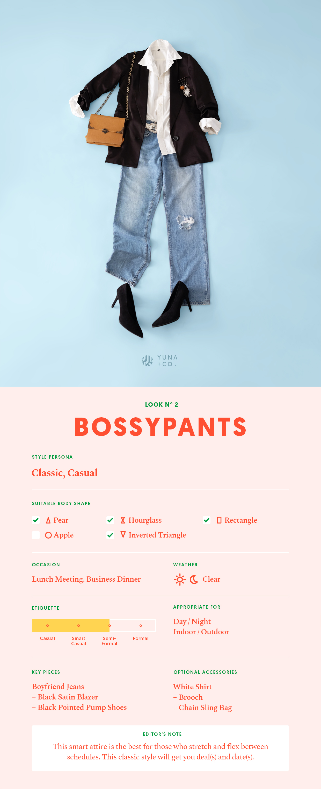

Boyfie Jeans, 3 Ways to Wear

In 2009, Katie Holmes stepped out in a pair of loose-fitted jeans that seemed to come straight out of her then-husband, Tom Cruise’s closet. And, the rest is history. With her pictures plastered all over tabloids and the trend picking up faster than you’d think, the “boyfriend “ jeans soon became a staple fashion item for any girl, Hollywood star or not.
There are many reasons to love boyfriend jeans. With a slouchy and relaxed structure, this bad boy can be your best companion for the whole week. Denim has always been an easy material to work with any top and look, with a sense of chic dressing paired with boyish charm, so if you are practically living in your boyfriend jeans, hey, we can’t blame you.
Wearing boyfriend jeans doesn’t have to mean frumpy baggy style too! As our stylists have prepared here, rocking em jeans can be girly, serious, and fun with the right items. Check out our take on “ One Boyfriend Jeans, Three Ways” ala Yuna :

Look #1: Shades Of Blue
A perfect OOTD for a smart casual day, pairing your boyfriend jeans with a feminine monochromatic top always works because it spells effortless simplicity in the instant. There’s an immediate balance in a lovely blouse and a pair of girly shoes that immediately tone down the ruggedness of the denim.
For pear and rectangle body shapes, this look is designed to slim down your bottom parts while brings attention to the upper area. Which is why we also recommend adding a few blings and other accessories to enhance the overall look. Try this one for your next date or weekend hangout, and we promise you’ll enjoy every minute of the confidence this look brings!

Look #2: Bossypants
Hello boss babes! We feel like the combination of smart casual in skinny jeans and high heels is a little bit overused and predictable for now, so why not switch it up with something loose for a change? You’ll still look like your sexy self, but with an aura of cool and suave that boyfriend jeans never fails to exude.
Loose boyfriend jeans also offer room for comfort which makes running the day that much more pleasant. S roll those sleeves up, both of your white shirt and blazers, and show em who’s boss with our look here.

Look # 3: Fun in The Sun
The Hawaiian shirt is all the rage this summer, and the safe bet is to style it with your hot pants or other summery ensembles. But our take on fun in the sun involves a cute tee and boyfriend jeans, with a pair of sneakers to bring out the rebel in you.